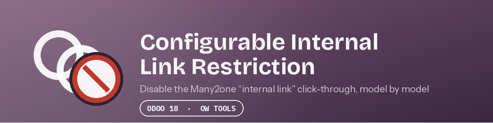

Pick exactly which models lose the Many2one “open linked record” arrow — without touching access rights, without writing code, and without affecting Kanban views.
Add any model to a simple configuration list. Every Many2one pointing at records of that model has its click-through disabled — no per-field setup, no view inheritance to maintain.
The restriction is scoped to the model being displayed — its own Form and List views. Kanban views are never touched, whatever you configure.
Untick a model's Active toggle to lift the restriction instantly, or re-enable it later, without ever deleting the configuration entry.
The rule is about the view being displayed, not the model the Many2one field points to.
If hr.leave is restricted, every Many2one shown on an hr.leave Form or
List loses its open-record arrow — regardless of what it links to.
| View type | Affected by restriction? |
|---|---|
| Form view | Restricted when configured |
| List view | Restricted when configured |
| Kanban view | Never restricted |
ir.model.access.csv rights or ir.rule record rules. A user
with read access to a restricted model can still reach its records through search,
another menu, or a report. For real data-level security, use record rules.| Compatible version | Odoo 18.0 |
| Category | Tools |
| Depends on | base, web |
| Configuration menu | Ow Tools › Internal Link Restrictions |
| Required access group | Settings / Technical Features |
| License | LGPL-3 |
| Author | Odoo Wings |